Управляющий виллами на Бали
15.12.2023 - 15.01.2024
Управляющий виллами на Бали (Property / Villa Operations Manager)
Бали, Индонезия | 15.12.2023 - 15.01.2024 (один месяц)
Формат: полный операционный цикл, без выходных, высокая нагрузка (12-14 часов в день)
Объекты: 25 вилл/домов (основная часть - Убуд, также Кута) + отдельный проект реновации гестхауса на 10 номеров
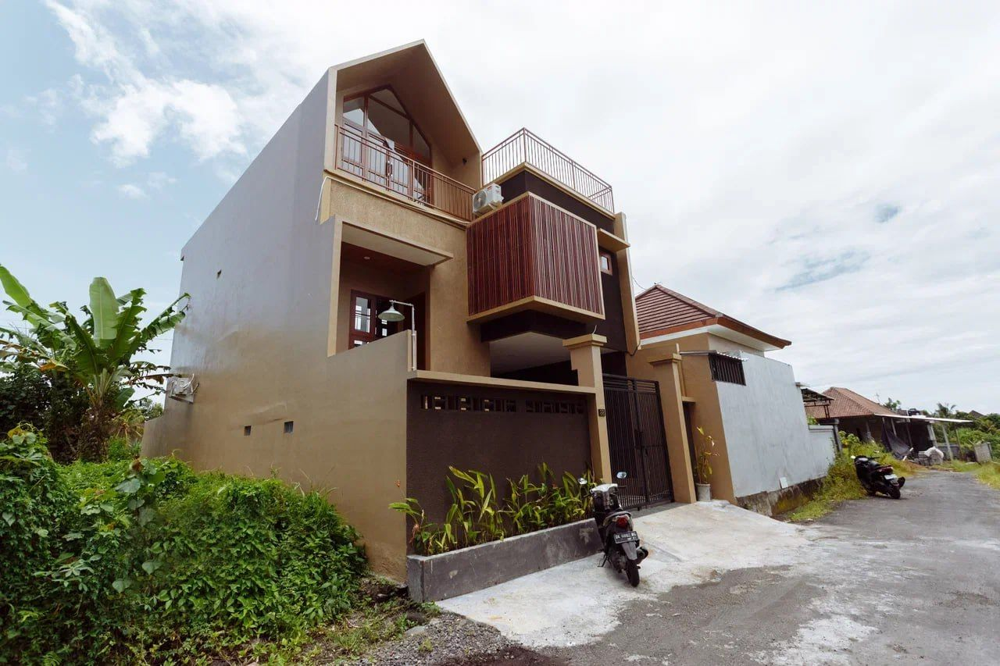
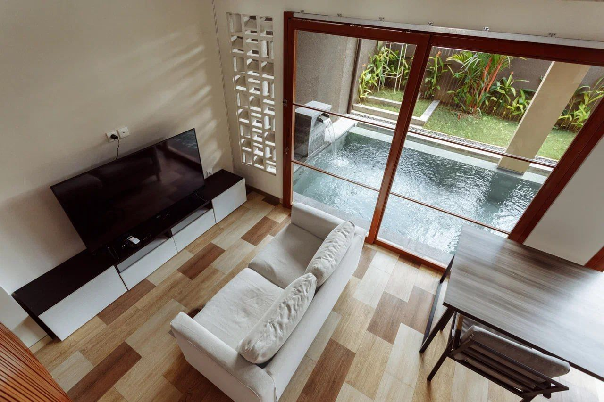
Контекст роли
Пришёл на позицию после личного собеседования с предпринимателем: изначально рассматривалась удаленная роль ассистента, но по итогам встречи мне предложили закрыть вакансию управляющего, так как прежний управляющий увольнялся. Компания в тот период активно масштабировалась: объекты регулярно добавлялись, процессы были в стадии становления, а инциденты на объектах возникали ежедневно.
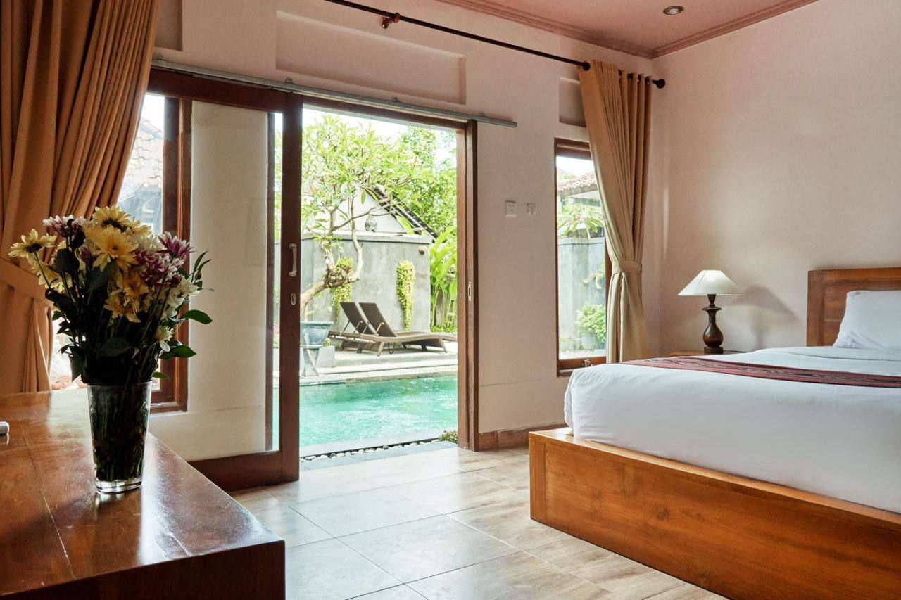
Ключевая зона ответственности
Операционное управление объектами под краткосрочную и помесячную аренду: от приемки и запуска нового объекта до ежедневной эксплуатации, коммуникаций и устранения неисправностей.
Что именно делал (функционал)
1) Запуск новых объектов “под ключ” (приемка и подготовка к аренде)
- Принимал новые виллы после аренды/подписания: полный осмотр, фиксация дефектов и задач.
- Организовывал доведение объекта до готовности: генеральная уборка, мелкий/средний ремонт, закупки, декор/комплектация, согласования с собственником.
- Подбирал подрядчиков (ремонтники, клининг, фотографы) и координировал их работу.
- Обеспечивал подготовку контента и старт продаж: фото, описание, размещение на площадках (Airbnb/Booking).
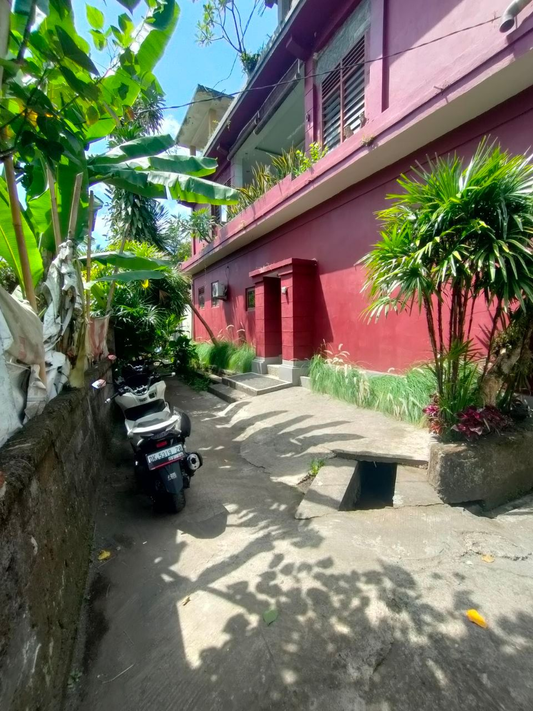
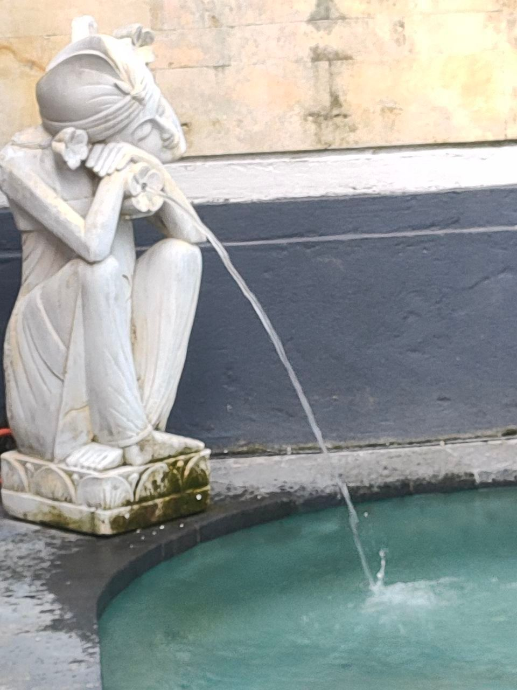
2) Ежедневная эксплуатация и “кризис-менеджмент”
- Постоянно закрывал инциденты на объектах: протечки (раковина/туалет), проблемы с электричеством, неработающий интернет, поломки кондиционеров, протечки крыши, бытовые аварии.
- Организовывал диагностику, поиск мастеров, контроль выполнения и приемку работ.
- Работал в режиме высокой многозадачности: одновременно коммуникация с гостями, собственниками, подрядчиками, клинингом и внутренней командой.
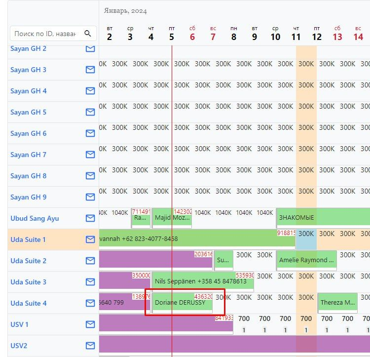
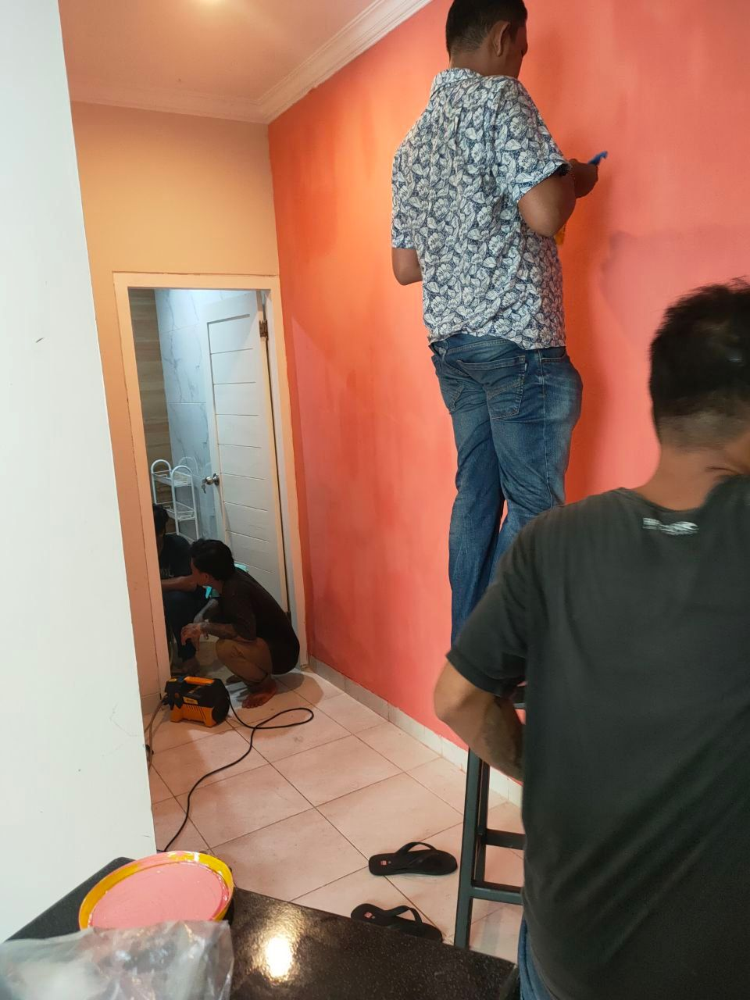
3) Контроль бронирований, календарей и операционной отчетности
- Следил за “шахматкой” (заселения/выселения/пересечения), координировал подготовку объекта под заезды.
- Вечером переносил данные из таблиц/календарей в FinTablo: учет и сведение цифр, фиксация показателей.
- Писал ежедневный отчет в командный чат: статус задач, инциденты, что закрыто, что в работе, что требует решения.

4) Отдельный проект: реновация гестхауса (10 комнат)
- Вёл проект практически с первых дней: полная реновация (не только косметика).
- Координировал подрядчиков и работы: замена плитки, обновление санузлов (новые унитазы/раковины), покраска стен, оснащение комнат.
- Организовал восстановление бассейна: слив, очистка, обслуживание системы, залив новой воды.
- Комплектация под дизайн: текстиль (постельное, шторы), базовый декор, закупки и логистика.
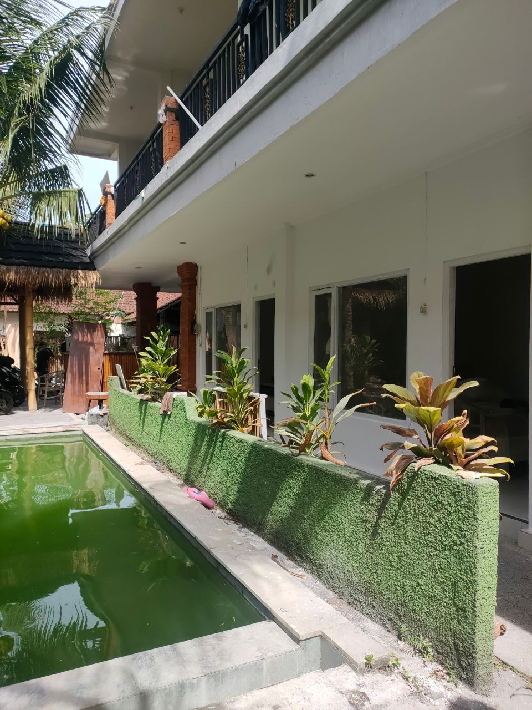
5) Искал подрядчиков и рабочих на уборку и ремонты
- составлял вакансии, публиковал их в группах Facebook и платных площадках
- вел переписки с кандидатами, проводил собеседования
- обучал новеньких
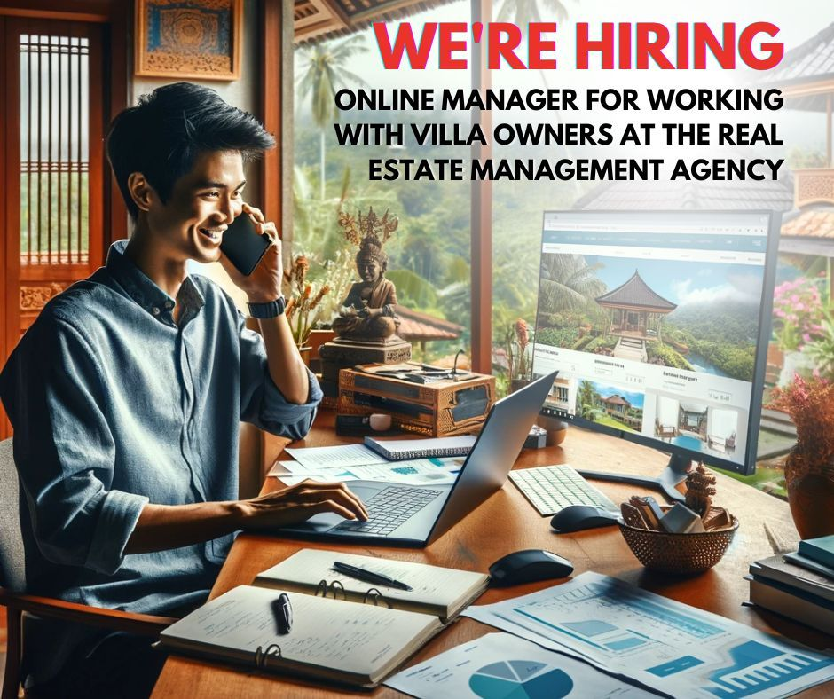
Порой приходилось решать нестандартные задачи по ремонту вилл. Пример - нужно было на высоте 4 метра прибить сетку от комаров, и чтобы индонезийцы меня понимали четко, я сверстал вот такую картинку. Задачу нужно было решить удаленно, найти исполнителя в интернете, чтобы он приехал на виллу и выполнил данный микро ремонт.
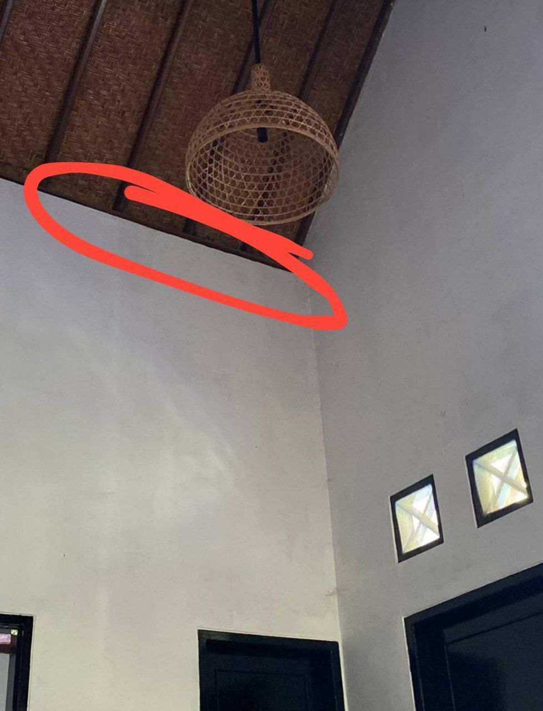
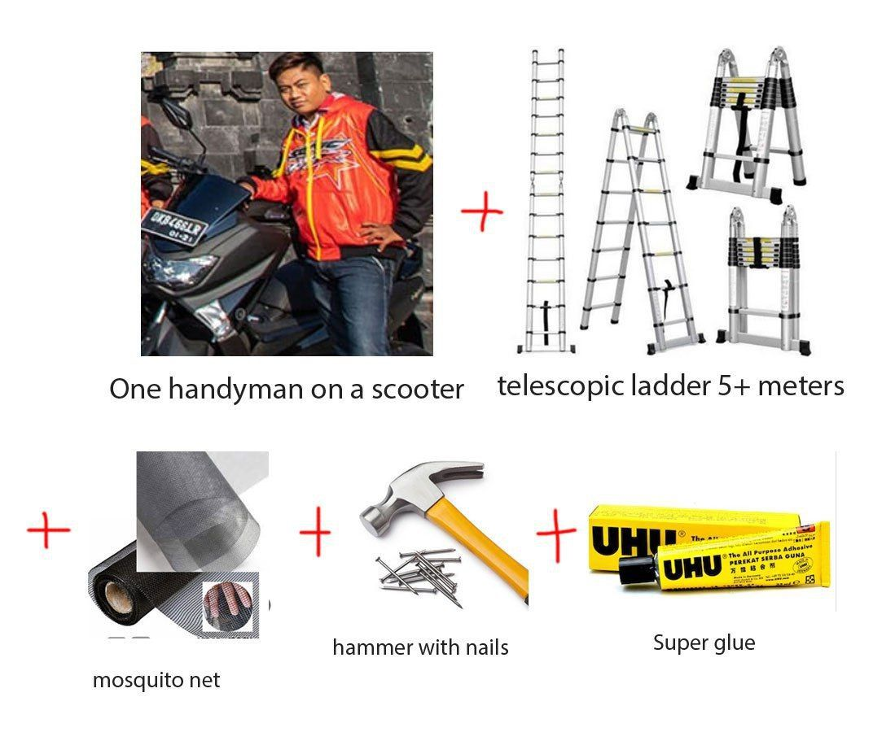
Мои сильные компетенции, которые проявились в этой роли
- Системное операционное мышление: умение держать в голове много потоков задач и быстро расставлять приоритеты.
- Кризис-менеджмент и стрессоустойчивость: работа в среде постоянных инцидентов и претензий, быстрые решения “здесь и сейчас”.
- Коммуникации 360°: гости, собственники, подрядчики, клининг, команда - переговоры, контроль, доведение до результата.
- Управление подрядчиками: поиск, постановка задач, контроль сроков/качества, приемка работ.
- Запуск объектов в аренду: приемка, подготовка, фотоконтент, листинги, готовность к заселению.
- Дисциплина и ответственность: фактически “один в поле”, без выходных, включая 1 января (даже в выходной телефон оставался рабочим).
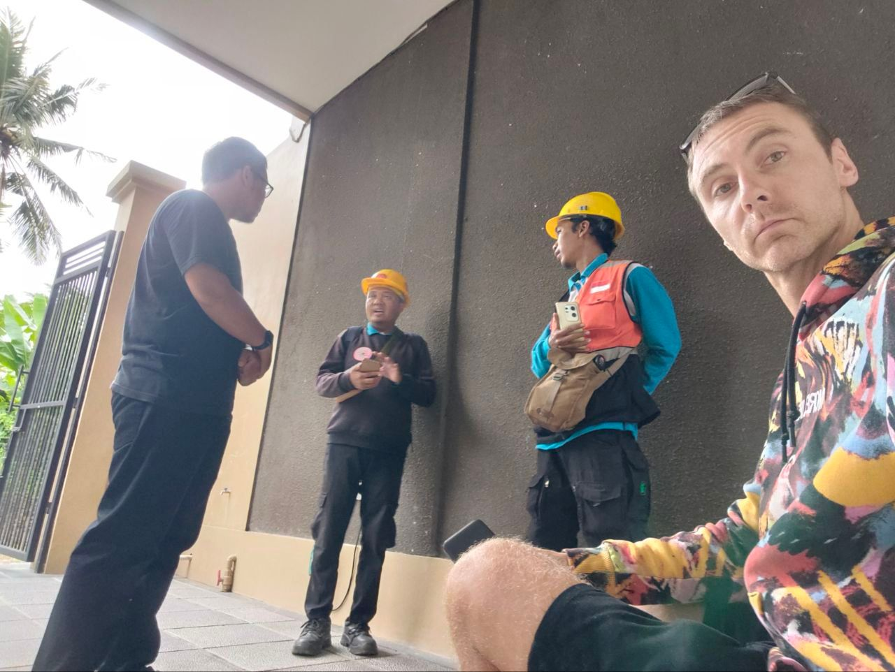
Важный управленческий вывод (и почему этот опыт ценен)
Роль была сильно перегружена по объему: объективно требовала команды. Я это зафиксировал руководителю через 2 недели работы и обозначил необходимость корректировки модели (люди/процессы/стоимость роли). После моего ухода обязанности были распределены между 5 сотрудниками (3 русскоязычные + 2 индонезийца), что подтвердило реальную нагрузку позиции.
Итог
За месяц я получил экстремально плотный опыт в управлении арендной недвижимостью: от запуска объектов до ежедневной эксплуатации и реновации отдельного проекта. Этот период стал “ускорителем” в навыках операционного управления, коммуникаций и работы с подрядчиками в реальном поле.
← Вернуться к резюме